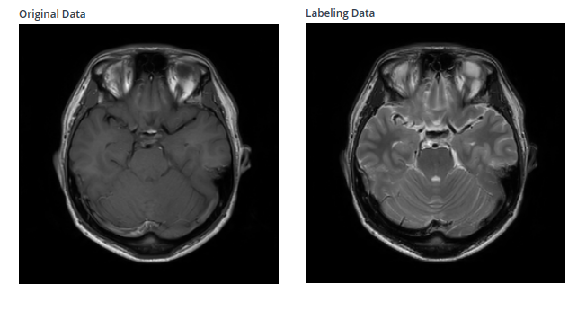
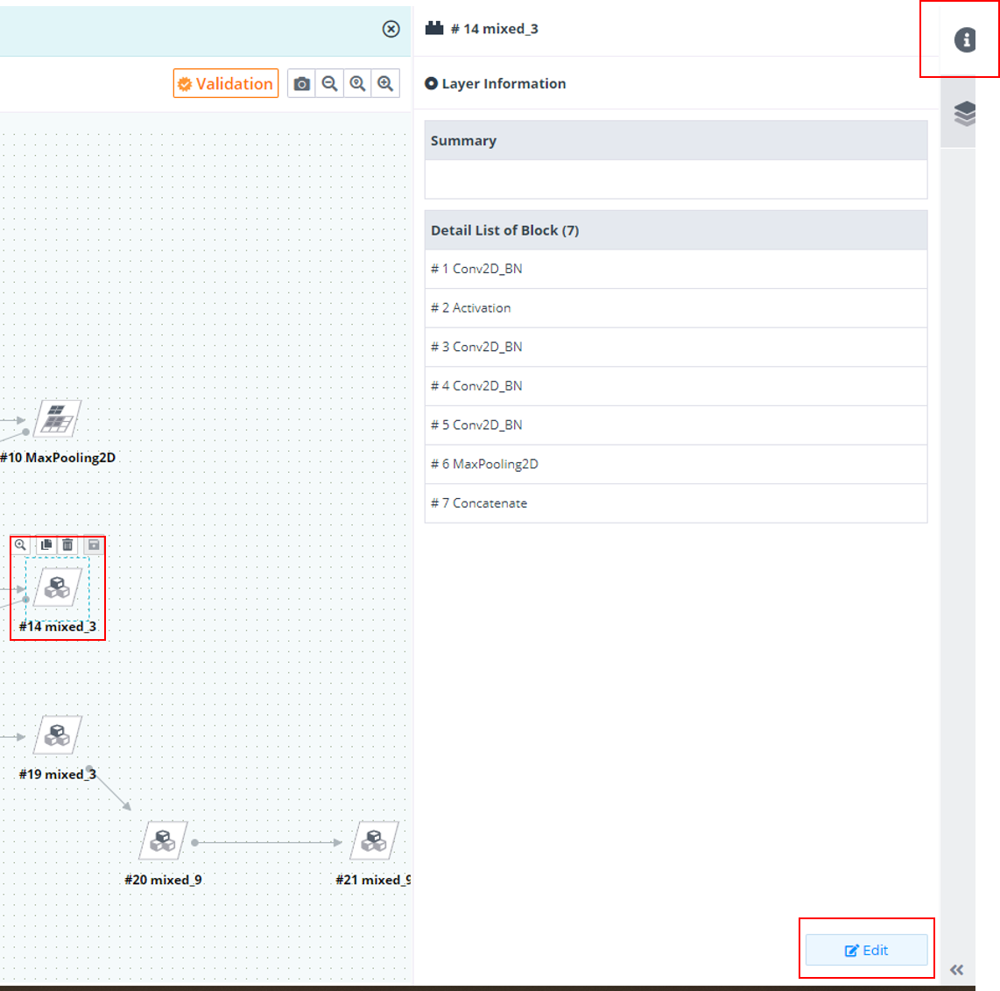
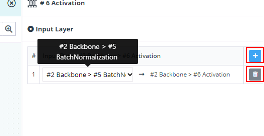

Version 2020-04.1126016
New Feature
1.Image to Image 학습을 위해 'Transformation' AI label type을 추가하였습니다.
예제 프로젝트 : https://www.deepphi.ai/modeler/3699
동영상 : https://www.youtube.com/watch?v=YkrASS0BenA

2.뉴럴 네트워크 편집 시 블록의 이름 및 설명 Edit 기능 추가
2-1 생성 및 편집을 한 블록을 선택 하면 나오는 Info 탭 하단 Edit 버튼 선택

2-2 블록의 이름과 설명 수정 후 Save 버튼 선택

2-3 사용자가 수정한 이름과 설명으로 변경 됨을 확인 가능

3.뉴럴 네트워크 편집 시 멀티 Input & Output 형태로 편집 가능 하도록 기능 추가

4.모델러 상단에 (?) 버튼 선택시 간단한 모듈 상태 및 모듈 기능 Help 버튼 설명 추가.

Improvement
1.Hyper-parameter Auto-Tunning 과정에서 over-fitting을 피하기 위해 perturbation을 주는 로직을 추가하였습니다.
2.image processing parameter setting 시 Value Type(string or number)선택 및 Number 일 때 Range 설정이 가능하게 추가했습니다.
2-1.Image processing 모듈을 선택한 뒤 우측 파라미터 탭을 누르고 Add Row를 눌러 파라미터를 추가합니다.
2-2.Parameter Type을 Input으로 설정하고, Value Type을 Number로 선택 한 뒤 Value Range에서 Range를 설정합니다.

- Range를 설정한 파라미터는 focus시 Tooltip으로 설정한 Range를 확인할 수 있습니다.

Bug
- 데이터셋 업로드시 확장자가 대문자인 경우 업로드가 안되는 버그 수정 ex) NII가 확장자인 경우
- Hyper-parameter Auto-Tunning 과정에서 learning rate이 1보다 커지는 버그 수정
Task
- 튜토리얼 동영상 추가
- 메뉴얼 업데이트